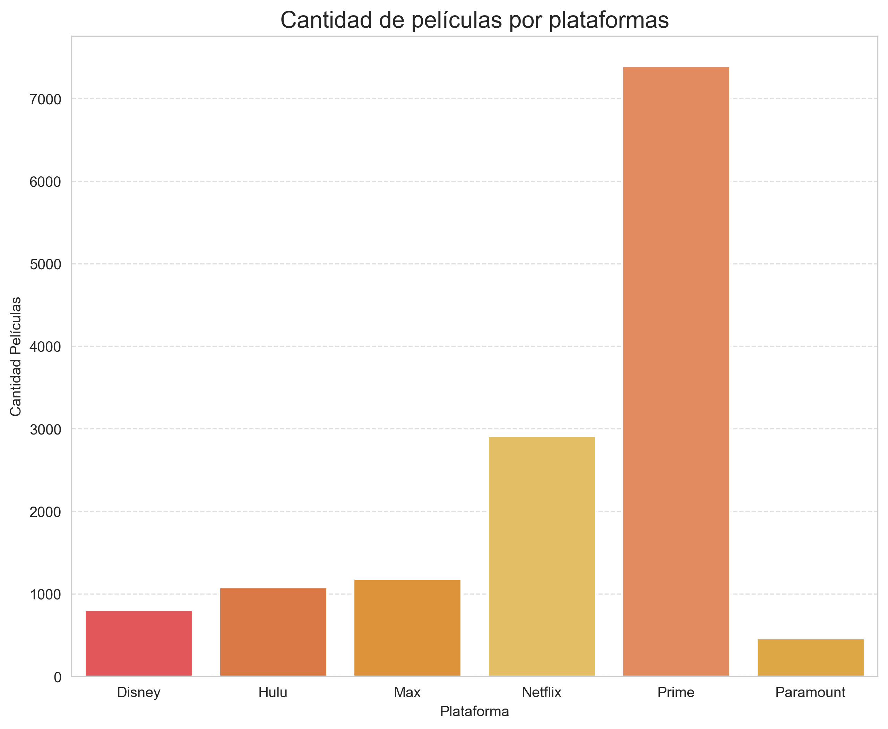
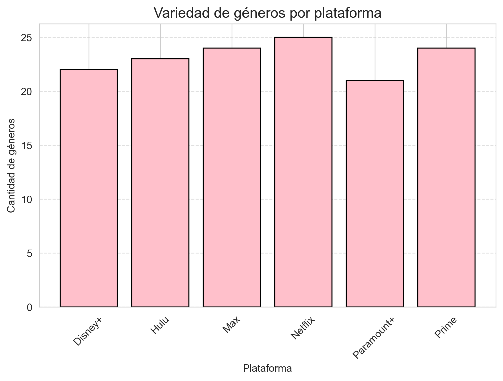
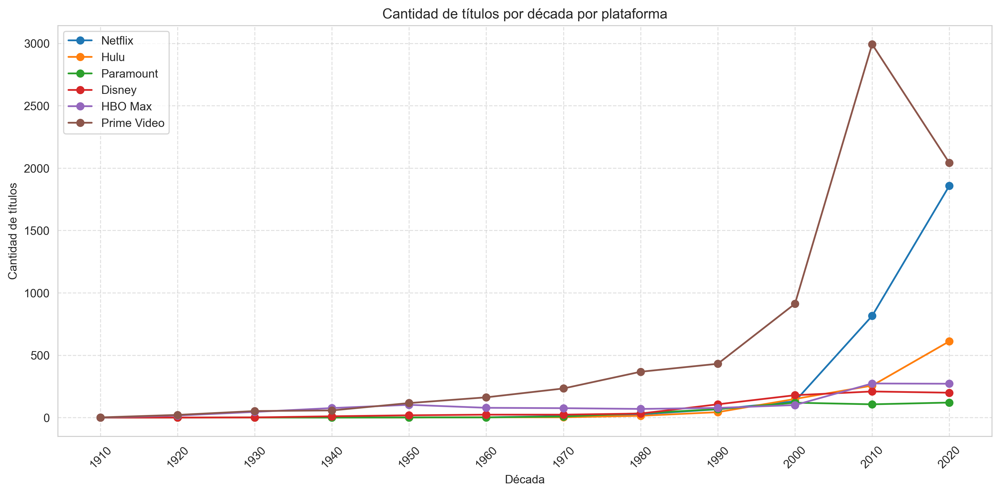
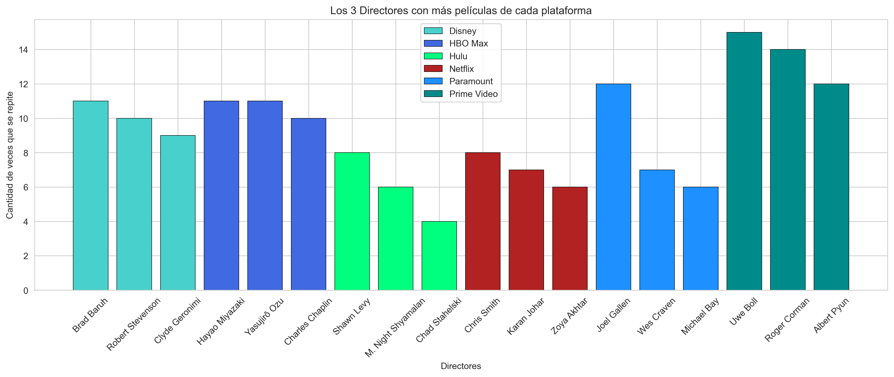
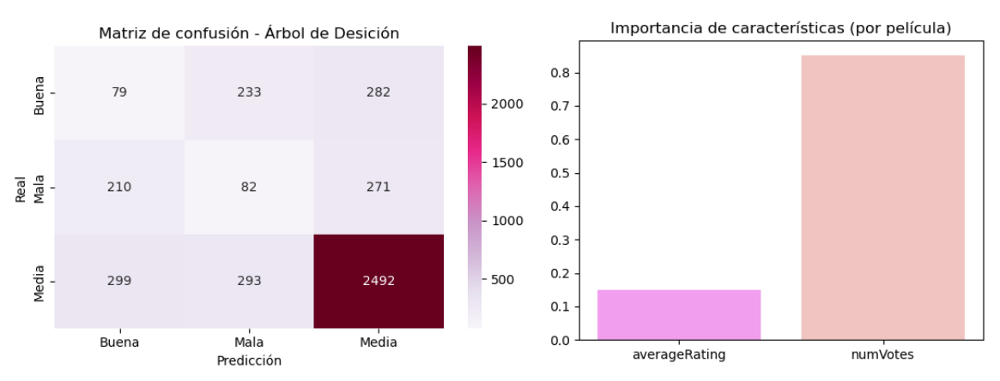
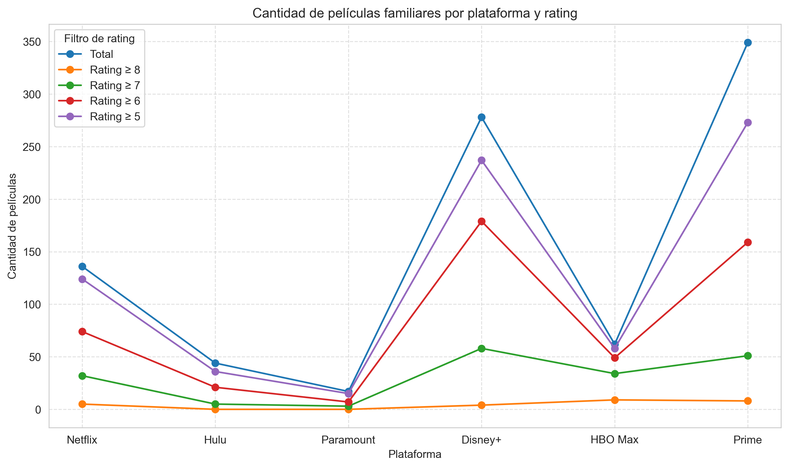

Integrantes
Catalina Díaz - Adrian Huizi - Juan Levipil - Andrea Riquelme
Nuestro proyecto da relevancia a un tema que notamos que suele ser un debate muy común hoy en día, e incluso nosotros mismos lo tenemos. El tema surgió cuando nos dimos cuenta de que todos compartíamos un gusto en común: ver películas. Sin embargo, nos percatamos de un problema frecuente: existe una gran variedad de plataformas de streaming, pero no siempre sabemos cuál elegir, ya que cada una tiene algo especial que nos hace inclinarnos hacia ella, aunque no necesariamente sea la mejor opción, ya sea por preferencias personales o por motivos económicos.
Por eso mismo, quisimos investigar en base a qué se guía la gente hoy en día al momento de elegir una plataforma de streaming. Visitamos varias páginas de noticias y foros de discusión; entre ellos, destacamos una conversación en Reddit, donde observamos que las personas tienden a elegir distintas plataformas según diversos aspectos. Puedes ver esa discusión aquí: Discusión en Reddit . Como se ve en los comentarios, algunas personas se guían por la calidad de las películas o series, otras por la cantidad de contenido disponible y otras por los precios.
Asimismo, notamos que algunos sitios de recomendación se enfocan más en la cantidad de títulos y los precios que en la calidad del contenido u otros factores que también son decisivos a la hora de elegir una plataforma. Un ejemplo de esto es el siguiente sitio: Guía de plataformas de streaming .
Por ello, decidimos analizar estas opciones desde diferentes perspectivas: desde quienes priorizan la calidad sobre la cantidad de títulos, hasta quienes buscan una opción más familiar o económica.
Objetivos
Este proyecto analiza de manera total las principales plataformas de streaming con el objetivo de identificar cuál ofrece una mejor experiencia considerando precio, catálogo y calidad general. A partir del procesamiento y exploración del conjunto de datos, se evalúan aspectos como la cantidad total de películas disponibles, la diversidad de géneros, la distribución por año de lanzamiento, la calidad promedio medida por ratings y la presencia de contenido familiar. También se consideran elementos contextuales, como los precios de suscripción, para complementar la comparación entre plataformas. El análisis busca entregar una visión clara, estructurada y basada en evidencia que permita orientar la elección de la plataforma más conveniente según los intereses y preferencias de cada usuario.
Preguntas de Investigación
- ¿Qué plataforma presenta mayor cantidad de películas?
- ¿Cuál es la plataforma que tiene mayor variedad de géneros?
- ¿Cuál es la plataforma que presenta mayor cantidad de películas actuales y cuál la que concentra más películas antiguas en su catálogo?
- ¿Cuál es la plataforma que concentra la mayor cantidad de películas con mejores calificaciones?
- ¿Qué actores se repiten más en el catálogo de cada plataforma?
- ¿Qué directores se repiten más en el catálogo de cada plataforma?
- ¿Se puede crear un modelo de aprendizaje supervisado que, a partir de las características de cada película, prediga si pertenece a una plataforma buena, media o mala en relación a calidad/precio?
- Si una persona quiere contratar un plan para su familia (la cual tiene infantes), ¿qué plataforma le recomendarías?
Análisis
Pregunta 1. ¿Qué plataforma presenta mayor cantidad de películas?
Para responder a esta pregunta, nuestro método estadístico utilizado fue conteo y
frecuencia absoluta, utilizando así la función count() de Pandas después de agrupar
por groupby() a través de la variable categórica Platform. Se eligió este método
ya que es el más directo para conseguir el total de los catálogos.
Prime Video sobresale significativamente superando las 7.000, lo que duplica el catálogo de Netflix, quien queda en segundo lugar, y supera por mucho al resto.
Pregunta 2. ¿Cuál es la plataforma que tiene mayor variedad de géneros?
Analizamos la distribución de películas entre todos los géneros disponibles; definimos la plataforma con la distribución de géneros más equilibrada como la más adecuada para el usuario, ya que le ofrece una variedad de opciones mayor.
Todas las plataformas se mantienen en un rango de 20–25 géneros, con Netflix levemente por encima.
Pregunta 3. ¿Cuál es la plataforma que presenta mayor cantidad de películas actuales y cuál la que concentra más películas antiguas en su catálogo?
Se utilizó un criterio de umbral temporal para determinar qué películas se consideran antiguas y cuáles actuales. Esta filtración, que usa los años como parámetro, se hizo con el fin de evaluar bien el catálogo de cada plataforma y poder analizar tendencias históricas.
Prime domina la mayoría de las décadas, tanto en contenido antiguo como reciente, aunque en el período más actual (2023–2025) la ventaja recae en Netflix.
Pregunta 4. ¿Cuál es la plataforma que concentra la mayor cantidad de películas con mejores calificaciones?
Se volvió a establecer un umbral, pero ahora de calidad (rating). Se eligió para evaluar la calidad relativa respecto a la cantidad de películas y así visualizar la concentración de contenido bien evaluado en cada catálogo.

Pregunta 5. ¿Qué actores se repiten más en el catálogo de cada plataforma?
Se respondió esta pregunta mediante un análisis de frecuencia de actores y actrices. Primero se
filtraron las columnas correspondientes y luego se aplicó value_counts() sobre el
DataFrame resultante. Esta técnica permite medir la preferencia de cada plataforma por ciertos
intérpretes.
Pregunta 6. ¿Qué directores se repiten más en el catálogo de cada plataforma?
El procedimiento realizado para responder esta pregunta es el mismo que en la anterior, pero aplicado ahora a la columna de directores.
Pregunta 7. ¿Se puede crear un modelo de aprendizaje supervisado que, a partir de las características de cada película, prediga si pertenece a una plataforma buena, media o mala en relación a calidad/precio?
Para responder esta pregunta se usó un modelamiento predictivo de clasificación. La variable objetivo (Y) corresponde a la clasificación ("buena", "media", "mala") y las variables predictoras (X) son características de las películas (rating, género, etc.). El desempeño se evaluó con métricas como Precisión, Recall, F1-Score y la Matriz de Confusión.
El modelo supervisado obtuvo un rendimiento moderado, con métricas cercanas a 0.63 y un comportamiento estable. La matriz de confusión revela un sesgo hacia la categoría "Media", lo que dificulta distinguir correctamente entre "Buena" y "Mala". A pesar de estas limitaciones, el modelo ofrece una primera aproximación útil para clasificar plataformas por calidad/precio, siendo Paramount+ la mejor evaluada.
Pregunta 8. Si una persona quiere contratar un plan para su familia (la cual tiene infantes), ¿qué plataforma le recomendarías?
Para esta recomendación se priorizó la cantidad de contenido familiar de cada catálogo cuya calidad promedio fuese mayor al resto. Al compararlo con el precio de suscripción se obtiene una opción óptima en términos de cantidad, calidad y costo.
Disney+ y Prime Video compiten en cantidad de películas con buen rating (mayor a 7), pero Prime termina ganando debido a su número total de películas en esta categoría y su menor precio mensual.
Conclusiones
Aquí escribes tus conclusiones finales.